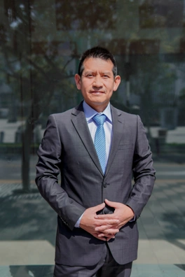

Experiencia aplicada a tus proyectos.
Somos MALBA PMC. Conectamos consultoría, formación y herramientas digitales para fortalecer la gestión de proyectos de transmisión eléctrica.
Transformamos la experiencia en metodología aplicada.
Somos una firma especializada en capacitación y consultoría para proyectos de transmisión eléctrica. Acercamos estándares y metodologías internacionales a las necesidades reales de cada organización.
Diseñamos estrategias de gestión para la construcción de líneas y subestaciones, combinando visión estratégica, planificación y control. Nuestro objetivo es contribuir al cumplimiento de plazos, al uso eficiente de los recursos y a una gestión más informada de los riesgos.

«Sin método, los proyectos se acercan al fracaso; con método, se acercan al éxito.»MALBA PMC
Un enfoque conectado con la realidad del proyecto.
Entendemos el contexto
Partimos de la realidad del proyecto: su etapa, restricciones, objetivos y desafíos de gestión.
Estructuramos la gestión
Conectamos planificación, control y riesgos con métodos y herramientas aplicables.
Convertimos la práctica en aprendizaje
Organizamos la experiencia para fortalecer las decisiones del equipo y los proyectos siguientes.

Miguel Alba
Ingeniero Electricista por la Universidad Nacional de Ingeniería y consultor en gestión de proyectos de infraestructura eléctrica.
Cuenta con más de 10 años de experiencia en transmisión de alta tensión, en proyectos de líneas y subestaciones de hasta 500 kV.
Ha participado desde la planificación hasta la puesta en servicio y ha brindado soporte metodológico a portafolios de inversión en transmisión. Su enfoque conecta la experiencia práctica con metodologías de gestión.
- PMP®
- Project Management Professional · PMI
- RMP®
- Risk Management Professional · PMI
- ISO 31000
- Risk Manager · PECB
Una experiencia.
Tres formas de acompañarte.
Encuentra la propuesta que responde a las necesidades de tu equipo.


Conversemos sobre tu proyecto.
Cuéntanos qué necesitas fortalecer. El primer paso es entender tu contexto y definir la forma de acompañarte.
- 01 Comparte tu necesidad
- 02 Revisamos el contexto del proyecto
- 03 Definimos una propuesta a medida